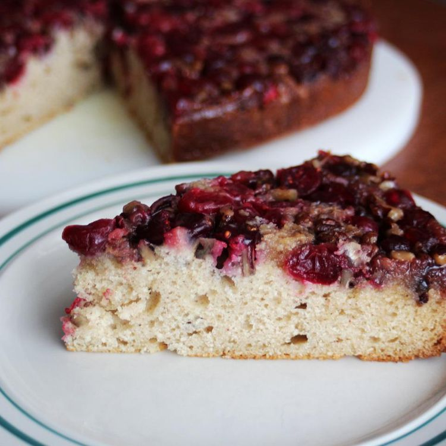

Cranberry Upside-Down Coffee Cake

Ingredients
- ⅔ cup packed brown sugar
- ⅓ cup butter
- 1 ¼ cups cranberries
- ½ cup chopped pecans
- ½ cup butter, room temperature
- ¾ cup white sugar
- 2 eggs
- 1 teaspoon vanilla extract
- 1 cup sour cream
- 1 ½ cups all-purpose flour
- 1 ½ teaspoons baking powder
- 1 teaspoon baking soda
- ½ teaspoon ground cinnamon
- ¼ teaspoon salt